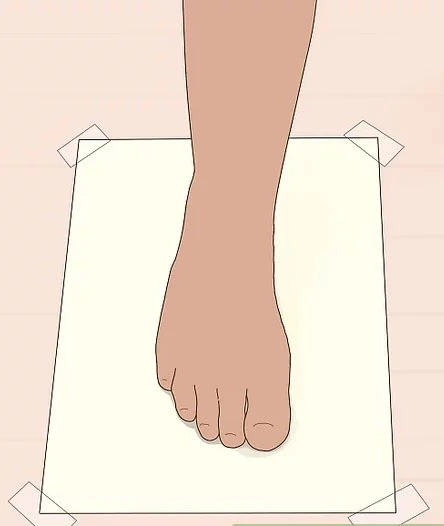
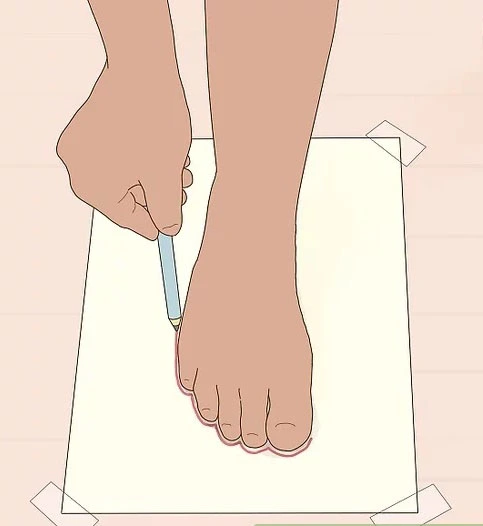
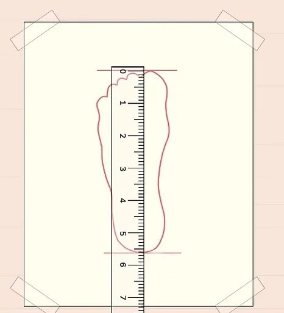
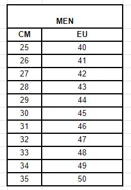
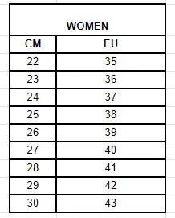

<div class="container">
    <div class="col-12">
        <div class="title my-2">HOW TO FIGURE OUT YOUR SHOE SIZE</div>
        <div class="article">
            <ol>
                <li><strong>Prepare Your Paper: </strong></li>
                <ul>
                    <li>Place a sheet of plain paper on a flat, safe indoor surface. Ensure it's big enough for your
                        foot.</li>
                    <p>
                        
                    </p>
                </ul>
                <li><strong>Position Your Foot: </strong></li>
                <ul>
                    <li>Stand on the paper with your bare foot, ensuring it's centered and not hanging off the paper.
                    </li>
                    <p>
                        
                    </p>
                </ul>
                <li><strong>Trace Your Foot: </strong></li>
                <ul>
                    <li>Use a pencil to trace the outline of your foot, keeping it close to your foot's edge. It's
                        easier with help from a friend for accuracy.</li>
                    <p>
                        
                    </p>
                </ul>
                <li><strong>Measure Your Sketch: </strong></li>
                <ul>
                    <li>Use a ruler or measuring tape to measure from the heel to the top of your tallest toe on your
                        foot sketch. Remember, the unit of measurement is in centimeters (CM). Write down these
                        measurements for both feet.</li>
                    <p>
                        
                    </p>
                </ul>
                <li><strong>Find Your Shoe Size: </strong></li>
                <ul>
                    <li>To determine your shoe size, compare your measurements in CM to the shoe size chart below,
                        specifically focusing on the EU column. Locate where your measurements fall in the EU column to
                        figure out your shoe size. Use the Men Chart if you are a man and Women Chart if you are a
                        woman.</li>
                    <p>
                        
                    </p>
                    <p>
                        
                    </p>
                </ul>
            </ol>
        </div>
    </div>
</div>